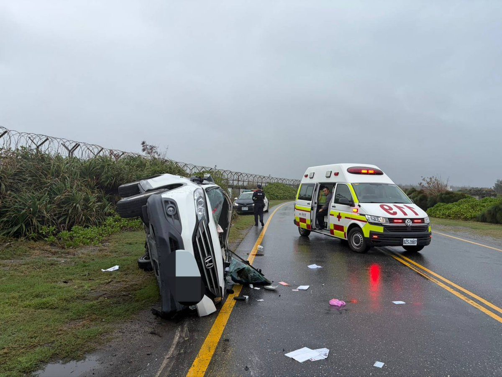

花蓮193縣道自小客對撞計程車釀6傷 駕駛酒測零毒測陰性

可樂電子報小編/編輯
花蓮縣193縣道7公里處昨（7）日下午14時許發生一起嚴重的自小客車與計程車對撞交通事故。花蓮縣警察局新城分局獲報後，立即派遣巡邏警力與交通處理小組趕赴現場處置，並通報消防救護人員到場支援，迅速展開交通管制與傷患救護作業。

經警方初步調查瞭解，該起事故發生於7日下午約14時，一名莊姓男子駕駛自小客車沿著193縣道由南往北方向行駛，當車輛行經7公里處路段時，不知何故與對向由鄭姓女子所駕駛之營業計程車發生正面猛烈碰撞。因撞擊力道相當強大，自小客車失控翻覆於路旁，計程車車頭亦嚴重變形毀損，車體零件碎屑散落滿地，場面怵目驚心。

事故造成自小客車駕駛莊姓男子及車內2名乘客臉部、手腳等多處擦挫傷；對向計程車駕駛鄭姓女子及車內3名乘客亦分別受有臉部、腿部及腰部擦挫傷，兩車共計6人受傷。現場救護人員檢傷後，依傷勢情況分別緊急送往佛教慈濟醫院及門諾醫院進行醫療處置，所幸經急救診治後均無生命危險。

新城警分局員警於現場依規定對雙方駕駛展開調查，其中警方對自小客車駕駛莊男實施毒品唾液快篩檢驗，結果呈現陰性反應；另對莊男及鄭女兩名駕駛進行呼氣酒精濃度檢測，雙方酒測值均為0，已初步排除酒駕與毒駕嫌疑。至於詳細的車輛行車動線、肇事責任歸屬及確切事故成因，仍待新城分局交通鑑識人員進一步調查釐清。

新城警分局特別呼籲廣大用路人，193縣道路幅相對狹窄且沿途起伏彎道較多，行車時務必提高警覺，隨時注意車前動態並保持安全車距。駕駛人應嚴格遵守道路速限及標誌標線指引，切勿跨越分向線或在彎道處超車，更嚴格杜絕疲勞駕駛等危險行為，以保障自身與他人的行車生命安全。
📸 更多現場紀實影像

🌟 掌握花蓮在地第一手資訊・歡迎訂閱追蹤
深度紀實報導、在地精采影音專題，第一時間接收最新消息！